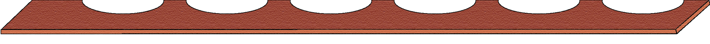
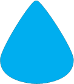
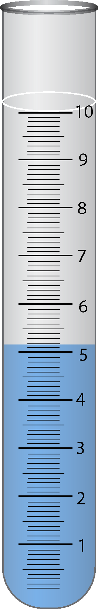
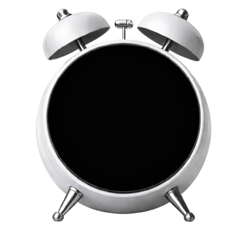
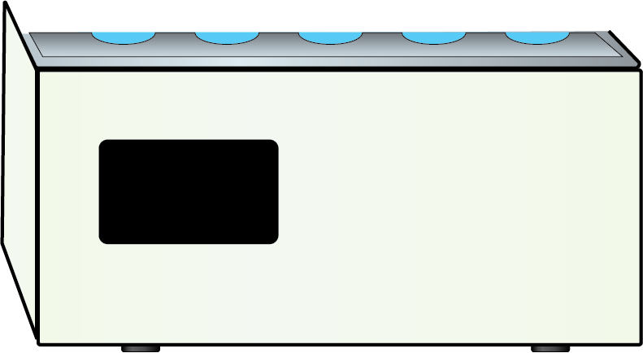
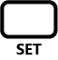
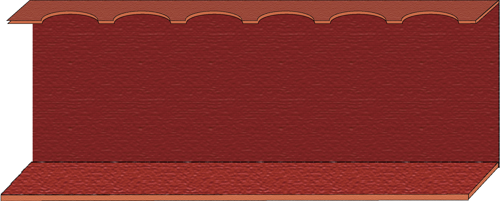
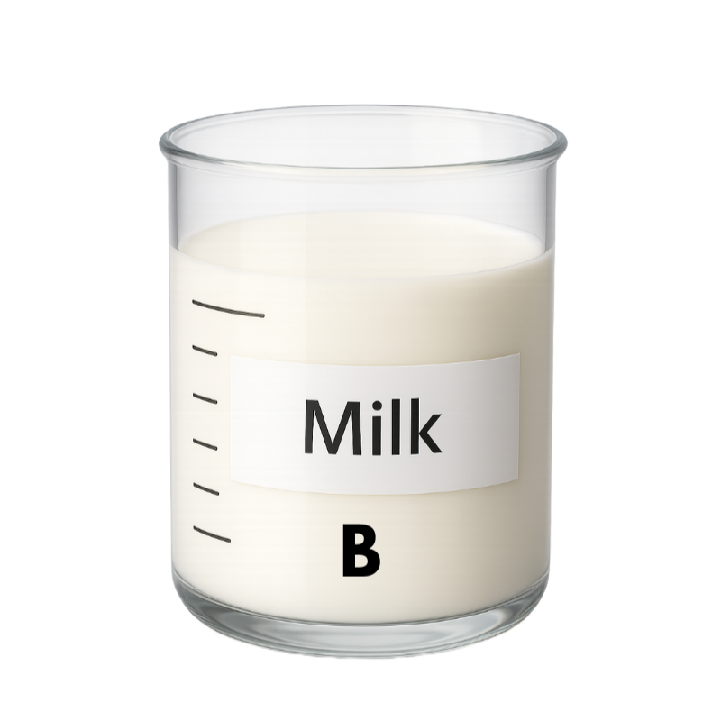

Observation Table
Observation: Development of blue colour indicates presence of starch.
| Sample | Color Observation | Starch Adulteration |
|---|---|---|
| A | Blue | Yes |
| B | White | No |
Inference
- Sample A shows presence of starch as blue colour is developed.
- Sample B shows absence of starch as no blue colour is observed.
00:00








SV
PV
25°C
25°C



Dairy Technology Lab
Observe the apparatus setup




